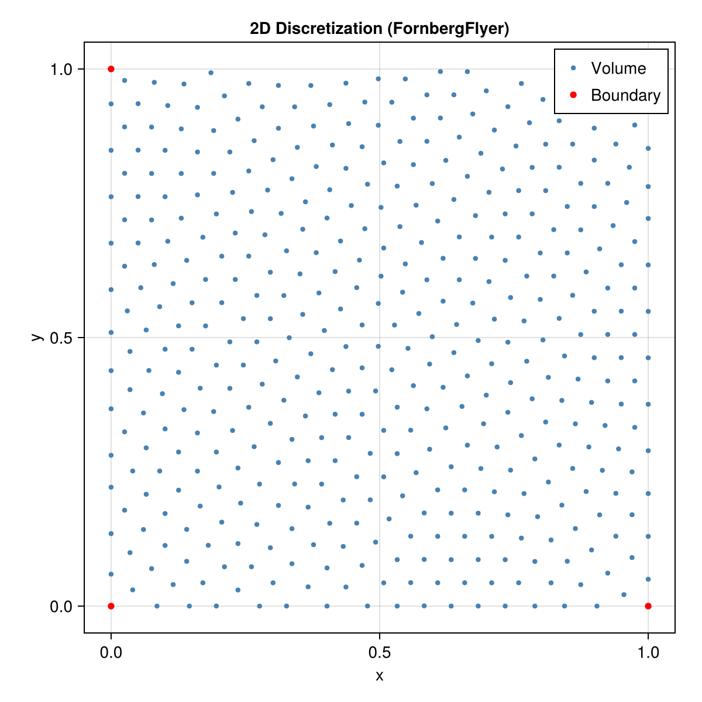

Quick Start
Installation
using Pkg
Pkg.add(url="https://github.com/JuliaMeshless/WhatsThePoint.jl")3D Example: Surface Mesh to Solver-Ready Point Cloud
using WhatsThePoint
# 1. Import a surface mesh
boundary = PointBoundary("model.stl")
# 2. Split into named surfaces by normal angle
split_surface!(boundary, 75°)
# 3. Generate volume points
spacing = ConstantSpacing(1mm)
cloud = discretize(boundary, spacing; alg=VanDerSandeFornberg())
# 4. Optimize point distribution
cloud, convergence = repel(cloud, spacing)
# 5. Build neighbor connectivity
cloud = set_topology(cloud, KNNTopology, 21)
# 6. Ready for your meshless solver
neighbors(cloud, 1) # neighbor indices for point 12D Example: Polygon to Point Cloud
using WhatsThePoint
# 1. Define a 2D polygon boundary
pts = Point.([(0.0, 0.0), (1.0, 0.0), (1.0, 1.0), (0.0, 1.0)])
boundary = PointBoundary(pts)
# 2. Discretize with FornbergFlyer (2D algorithm)
spacing = ConstantSpacing(0.05m)
cloud = discretize(boundary, spacing; alg=FornbergFlyer())
# 3. Optimize and connect
cloud, convergence = repel(cloud, spacing)
cloud = set_topology(cloud, KNNTopology, 9)Any closed polygon works — here's the Stanford Bunny silhouette projected from 3D:

Visualization
using GLMakie
visualize(cloud; markersize=0.15)Next Steps
- Guide — Full workflow walkthrough with explanations
- Concepts — Type hierarchy, design decisions, and units
- Discretization — Algorithm details and spacing options
- API Reference — Complete function reference